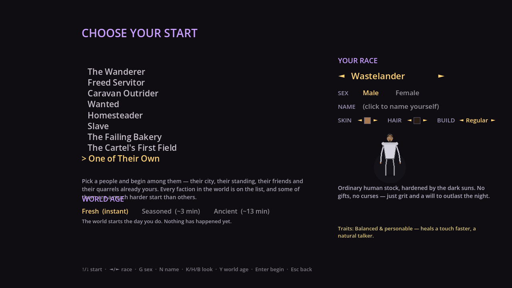
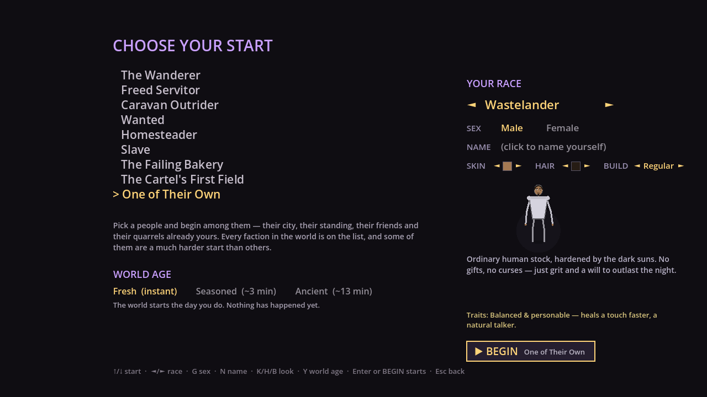
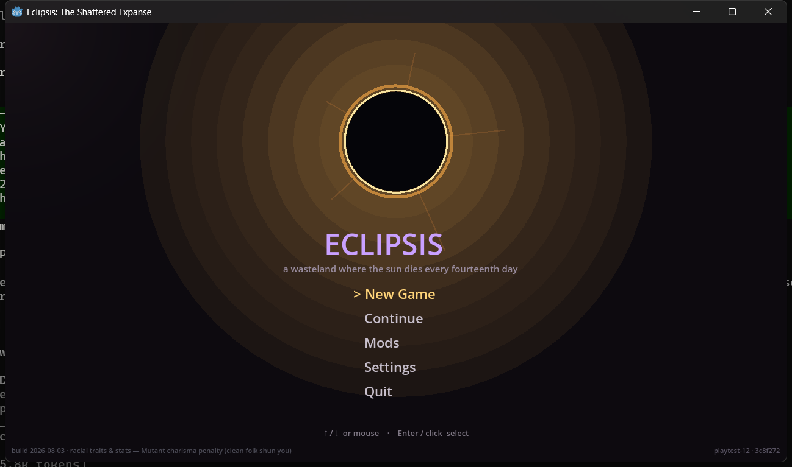
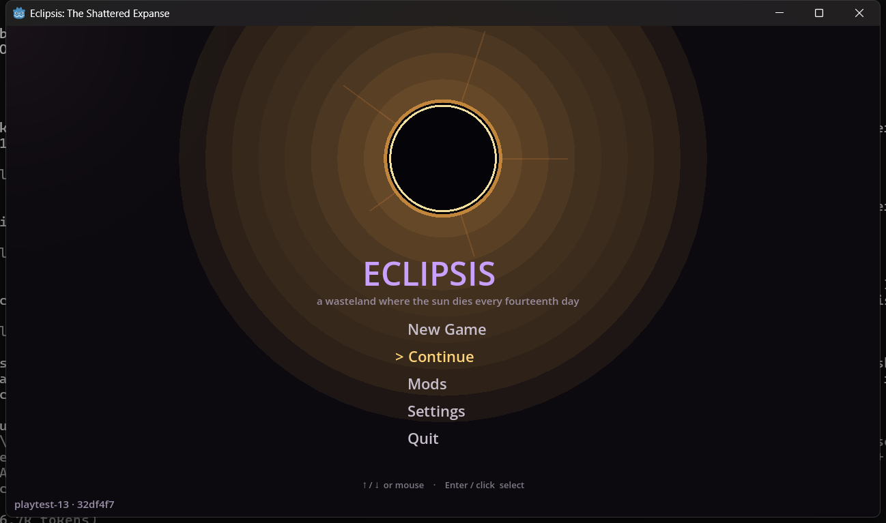
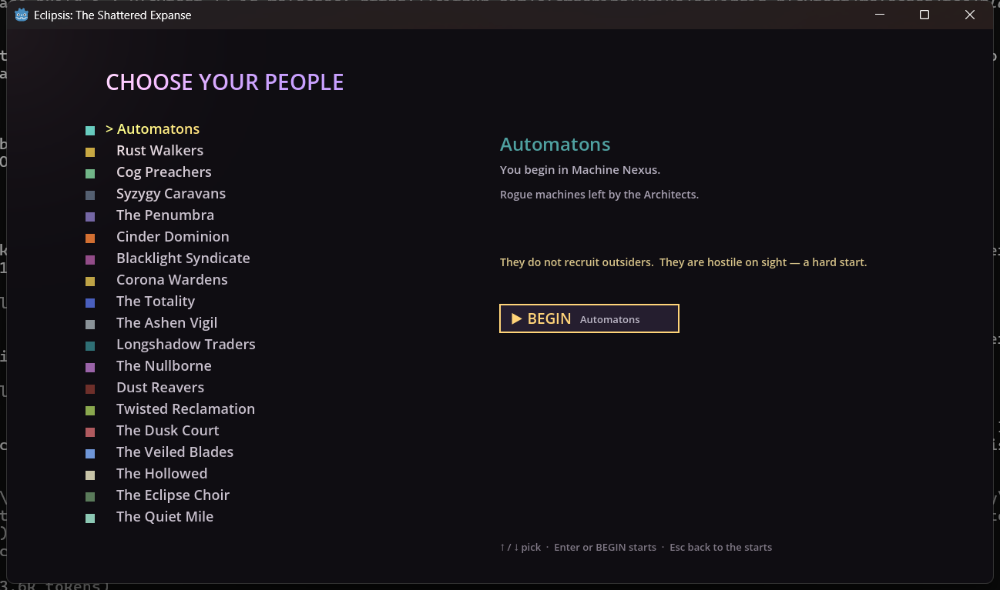
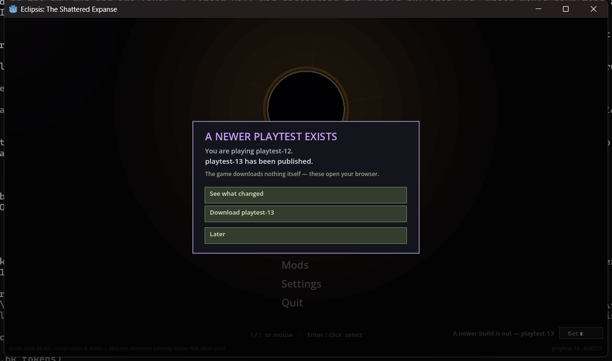

A short build after a big one. It answers three things playtest 12 kept raising that were not about the game at all: which build am I playing, why did a stray keypress start a run, and can I play it on a Mac. Nothing about hunger, thirst or the length of a day changes here.
Play it. Every one of the four things this build promises was checked on the shipped archive, not on source. One finding below came out of opening a real day-204 save on it, and it explains a report from playtest 12 that nobody could account for.
Three tiers, as before. The top one is the only one that counts as a promise.
playtest-13 · 32df4f7 once, bottom-left. The bottom-right corner, where a second hand-typed stamp used to contradict it, is empty. The log opens with the same string.xattr line is the fix.The same screen on the playtest-12 build and on this one. Same seed, same window, same selection.





The update check shipped in playtest 12 with nothing newer to find. This is the first cut where an older build has something to say, so it was driven from the playtest-12 archive against a copy of a real save directory with no memory of any release.

Later (or Esc) closes the card and writes the tag it saw; that build never asks about playtest-13 again, and a one-line reminder with a Get-it button stays in the corner. Download opens the release page — not the site root — and also counts as seen. The game never fetches or replaces its own binary; every button opens your browser.
| You said | What happened |
|---|---|
| "We need a version, that should be easy to use." | Shipped. The tag is in the filename, on the title, on the HUD and in the log — one generated string. |
| "It's confusing to scroll the starts and you just launch one." | Shipped. Rows select; BEGIN launches; both pickers. |
| "'World age' overlaps the bottom description." | Shipped. Measured 19 px over, now 25 px clear. |
| "I like the descriptions." | Kept. Not one blurb was shortened; the layout gave way instead. |
| "Time should pass slower, or food and water should empty slower. All I do is look for water." | Designed, not here. The owner ruled an hour-long game day, real-life drain (thirsty twice a day, hungry once), and a three-day ladder of penalties that never kills you. Ten number calls ruled. It is the next slab. Nothing about it is in this build, so it will still feel the way it felt. |
| "Not sure how I got to unfriendly with the Rust Walkers by just standing there." | Root cause found — in the save this gate opened. Below. |
The save that playtest 13 opened for the upgrade check is a real run of The Failing Bakery, day 204. Its owner reported going unfriendly with the Rust Walkers while standing still. The save says exactly how, and it was not the standing they thought.
| Measured, from the save | Value |
|---|---|
| Standing with the Rust Walkers | −100 — the floor; hostile begins at −50 |
| The shop (Vex's Larder, Rust Haven) | protection levies missed 38 · arrears 1,135 · counter shut · next collection day 207 |
| What the faction remembers of you | "your counter at Vex's Larder came up 30 short on the protection" |
| The debt ledger's figure for the same arrears | 2,086,917 coronas |
The mechanism, read from the shipped rules: a shop in a lawless town owes 30 coronas of protection every five days. Every collection you cannot meet costs four points of standing. At zero coronas with a shut counter, every collection misses: thirty-eight of them is −152, clamped to −100. That part is the game doing what it was told. The part that is not: the shortfall goes onto the same ledger as a moneylender's loan, which compounds at 5% per day. Over roughly 180 days that is a factor of about 6,500 — 1,135 becomes two million — and any debt over 60 turns every member of that faction hostile on sight, which is the HOSTILE GROUND warning over Rust Haven. Standing still is exactly when the collector keeps coming, and the only voice it has is one scrolling log line per visit; the chronicle never mentions it.
Four recommendations went to the owner: arrears should not compound at loan interest; arrears should floor at unfriendly, not hostile; the collection note should say the standing cost and the running total; and the Failing Bakery's numbers need a design look, since a shut counter cannot earn the 30 that keeps it open.
The survival baseline, measured before any pace change, so the change can be measured against it.
A player standing still in open waste with water and rations for seven game days, on the shipped two-minute day:
| Measure | Shipped build |
|---|---|
| Auto-drink per game day | 1.14 (a drink every 100 real seconds) |
| Auto-eat per game day | 0.29 (a meal every 3.5 game days) |
| Highest thirst / hunger the bar reached | 125 / 250 of 100 — a refill does not cap, so the bar sits pinned at full while the hidden value drains back |
| Lowest health, idle and well supplied | 50 — one pass of the hot hour while under half thirst |
The hot-hour burn is the number to watch: today its window is ten real seconds. On an hour-long day it would be three hundred, which is why the pace slab lands a health floor before it touches the clock.
Hunger, thirst and the length of a day are unchanged. No note tells you where you stand with a faction when a run begins or when a standing crosses a line. The protection ledger above still compounds. And as a machine standing in the Automatons' own city, the HUD flags the ground hostile because the faction is hostile to strangers by default — cosmetic, listed.
The game code and the instruments live in the private development repository; the hashes are here so the team can open them. Public items are linked.
| What | Where |
|---|---|
| The release | playtest-13 · game code 32df4f7 |
| The fix (confirm, stamp, layout) | 4993334 and its parents f2bc549, 9624d9b, f77a27e |
| The before frames | game code fbc3a79 (playtest 12) |
| Start-screen shot harness | tests/shot_scenario_select.gd · 14d4a70 |
| Exported-build driver (keys, clicks, capture) | tools/journey/shot_export.ps1 · 35d11bd |
| The gate itself, written before it ran | tools/journey/first_play_pt13.md · 3c45c07 |
| Survival baseline probe | tests/probe_needs.gd · 0d20245 |
| Starting-standings probe | tests/probe_start_rep.gd · b9f6fd5 |
| Survival pace design, with the owner's rulings | design/47_survival_pace.md · b4dc46b |
| Frames on this page | screenshots/pt13 |